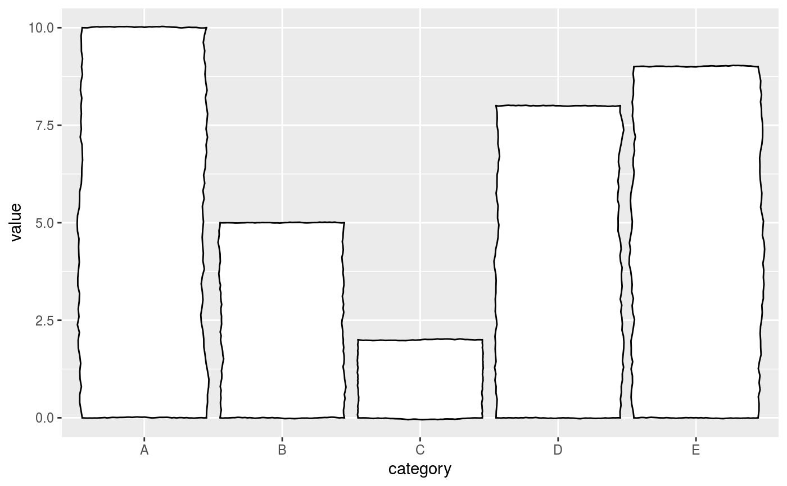
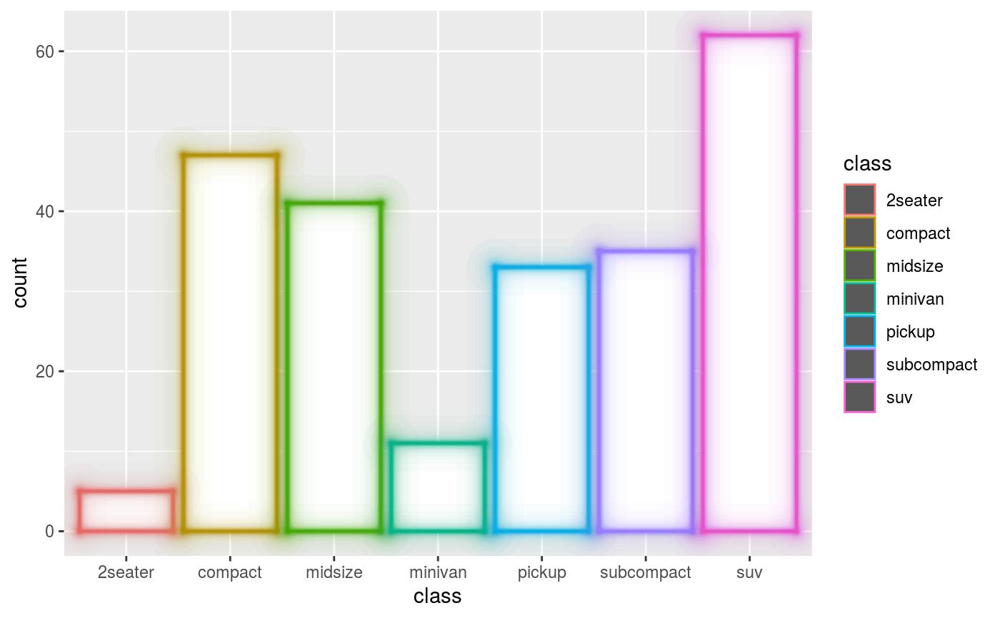
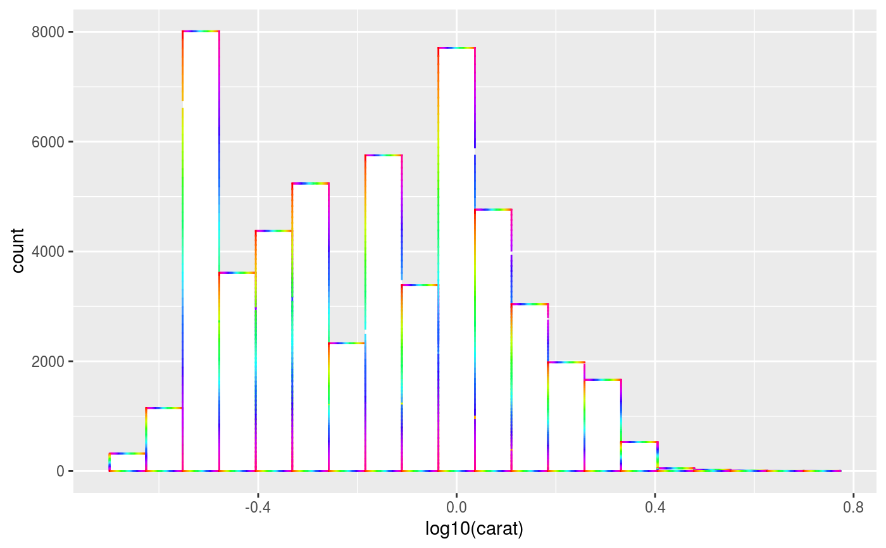

These geoms closely follow the geom_col() and geom_tile() but
take defaults from the theme and are drawn through theme elements. They use
the elementalist.geom_rect theme element.
geom_col_theme( mapping = NULL, data = NULL, position = "stack", ..., width = NULL, na.rm = FALSE, show.legend = NA, inherit.aes = TRUE, element = NULL ) geom_bar_theme( mapping = NULL, data = NULL, stat = "count", position = "stack", ..., width = NULL, na.rm = FALSE, orientation = NA, show.legend = NA, inherit.aes = TRUE, element = NULL ) geom_histogram_theme( mapping = NULL, data = NULL, stat = "bin", position = "stack", ..., binwidth = NULL, bins = NULL, na.rm = FALSE, orientation = NA, show.legend = NA, inherit.aes = TRUE, element = NULL )
| mapping | Set of aesthetic mappings created by |
|---|---|
| data | The data to be displayed in this layer. There are three options: If A A |
| position | Position adjustment, either as a string, or the result of a call to a position adjustment function. |
| ... | Other arguments passed on to |
| width | Bar width. By default, set to 90% of the resolution of the data. |
| na.rm | If |
| show.legend | logical. Should this layer be included in the legends?
|
| inherit.aes | If |
| element | An |
| stat | Override the default connection between |
| orientation | The orientation of the layer. The default ( |
| binwidth | The width of the bins. Can be specified as a numeric value
or as a function that calculates width from unscaled x. Here, "unscaled x"
refers to the original x values in the data, before application of any
scale transformation. When specifying a function along with a grouping
structure, the function will be called once per group.
The default is to use the number of bins in The bin width of a date variable is the number of days in each time; the bin width of a time variable is the number of seconds. |
| bins | Number of bins. Overridden by |
A Layer object that can be added to a plot.
geom_col_theme() understands the following aesthetics (required aesthetics are in bold):
x
y
alpha
colour
fill
group
linetype
size
Learn more about setting these aesthetics in vignette("ggplot2-specs").
df <- data.frame( category = LETTERS[1:5], value = c(10, 5, 2, 8, 9) ) # Styling through the partial theme setters ggplot(df, aes(category, value)) + geom_col_theme() + wiggling_geoms()# Styling through the `element` argument ggplot(mpg, aes(class)) + geom_bar_theme(aes(colour = class), element = element_rect_glow())# Styling through the main theme ggplot(diamonds, aes(log10(carat))) + geom_histogram_theme(bins = 20) + theme( elementalist.geom_rect = element_rect_multicolour() )